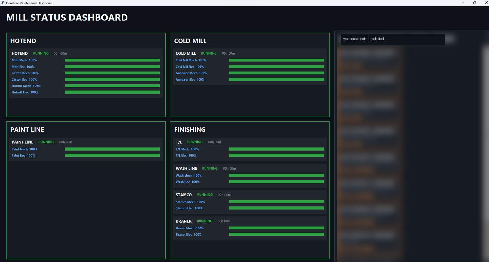

professional-experience / reliability-engineer
Reliability Engineer — Golden Aluminum
Manufacturing reliability, downtime reduction, PM support, troubleshooting, dashboarding, and production-support design work.
Mill status dashboard
Dashboard concept for showing equipment status and high-priority maintenance work in one place.

Green Belt work
Lean Six Sigma Green Belt work connected to PM completion and line-status visibility.
Production-support design work
CAD drawings and fixtures from this role are listed under CAD / Design Projects.